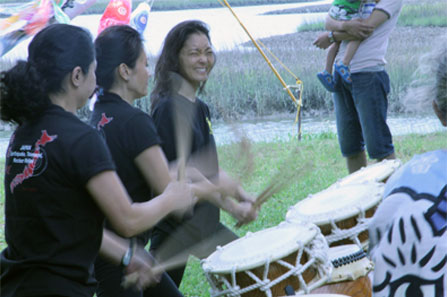

Recreational Track
Recreational classes offer a great opportunity to experience this unique art form in a fun and supportive setting. Participants will learn basic technique, history and etiquette but classes are hands on providing a physical and mental workout as we weave traditional and modern rhythms into dynamic music of celebration. Though these classes are geared for most ages and fitness levels, participants must be able to engage in intense and rigorous activity for the class session. These beginning classes are offered in 8 week sessions and all equipment is provided. The completion of one session will give a great overview of what Taiko is about and a powerful sense of satisfaction. If students wish to continue, the framework is designed so that participants can repeat the class and work at different skill levels as they progress.
Basic Introduction to Taiko Class 6 weeks $90 Wednesday Evenings 7:50 – 8:50
Session 1 1/21 – 3/11 (no class on 11/26)
Pre-Registration Required
Beginning Class 8 weeks $120 Monday Evenings 7:30 – 8:45
Session 1 1/12 – 3/16 (no class on 2/16)
Intermediate Class weeks $160 Monday Evenings 6:15 – 7:25
Session 1 1/12 – 3/16 (no class on 2/16)
Friday Morning Informal Rehearsals offered for students enrolled in Taiko Classes
Introductory Workshop and Orientation
Don’t have time to commit to a weekly class but would LOVE to try this out and see what it’s about? Come join the party in this fun and engaging 1.5 hour condensed workshop. Learn a bit about the origins of this art form and then start to learn a song based on core elements that define Taiko – it’s an exhilarating experience and one you won’t forget!
This is also a prerequisite for students entering Basic Intro Taiko Class.
Wednesday, January 14 7:30 – 9 pm $25
St. Andrews Gym, West Ashley
Pre-Registration Required Spaces fill up quickly!
All Classes held at the St. Andrews Gym at 1095 Playground Rd. West Ashley

- TaikoCharleston@gmail.com
- #843.345.7359
 Visit!
Visit!- Join Our Mailing List